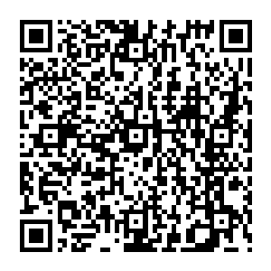

📷 Juega la misión en tu teléfonoEuropa, Asia y África forman el llamado «Viejo Mundo»: tres continentes vecinos, unidos por tierra y por historia, que fueron cuna de las grandes civilizaciones. En ellos nacieron la escritura, las religiones, la ciencia… y también procesos difíciles como el colonialismo.
| Accidente | Continente | Récord / dato |
|---|---|---|
| 🏔️ Monte Everest | Asia | La cumbre más alta del mundo (8,849 m), en el Himalaya (Nepal–China) |
| 🌊 Río Nilo | África | El río más largo del mundo (6,650 km); cuna de la civilización egipcia |
| 🏜️ Desierto del Sahara | África | El desierto caluroso más grande del mundo (9.2 millones km²) |
| 🌊 Mar Mediterráneo | Europa–África | Separa ambos continentes; cuna de la cultura occidental (Grecia, Roma) |
| 💨 Monzón | Asia | Vientos estacionales con lluvias vitales para el cultivo del arroz |
Honduras mantiene lazos con los tres continentes: exporta café, banano, textiles y palma africana a la Unión Europea (el AACUE facilita este comercio); importa tecnología y manufacturas de Asia y recibe becas de KOICA (Corea del Sur); y con África comparte, a través de la ONU, desafíos de desarrollo y cambio climático.
| Error | Por qué está mal | Lo correcto |
|---|---|---|
| Creer que África es el continente más grande | El más grande es Asia; África es el segundo. | Asia = el más grande y poblado ✔ |
| Ubicar el Nilo en Asia | El Nilo está en África (noreste). | Nilo = África (río más largo) ✔ |
| Confundir el río más largo con el más caudaloso | El Nilo es el más largo; el Amazonas, el más caudaloso. | Nilo = más largo · Amazonas = más caudaloso ✔ |
| Pensar que el monzón es un huracán | El monzón es un viento estacional con lluvias, no una tormenta. | Monzón = vientos y lluvias de temporada ✔ |
| Decir que la UE tiene 44 países | Europa tiene 44 países; la Unión Europea son 27. | Europa 44 países · UE 27 países ✔ |
| Columna A | Columna B |
|---|---|
| 1. ____ Asia | A. Río más largo del mundo (6,650 km), en África |
| 2. ____ Nilo | B. Cumbre más alta del mundo (8,849 m), en los Himalayas |
| 3. ____ Sahara | C. Continente más grande y más poblado del mundo |
| 4. ____ Unión Europea | D. Vientos estacionales que traen lluvias en Asia del sur |
| 5. ____ Everest | E. Desierto caluroso más grande del mundo, norte de África |
| 6. ____ Monzón | F. Bloque político de 27 países europeos |
| 7. ____ Mediterráneo | G. Dominio europeo sobre África y Asia (ss. XV–XX) |
| 8. ____ Colonialismo | H. Mar que separa Europa de África |
| 9. ____ KOICA | I. Segundo continente más grande; 54 países y 2,000 idiomas |
| 10. ____ África | J. Agencia de cooperación de Corea del Sur en Honduras |
| Actividad | Lugar | Valor | Nota obtenida | Observación |
|---|---|---|---|---|
| Copió los contenidos de este material en su cuaderno de Ciencias Sociales. | Tarea en el hogar | 100 | ||
| Resolvió la sección «Ponte a Prueba» directamente en esta ficha. | Tarea en el aula, un día antes del examen | 100 | ||
| Ubicó en un mapamundi los continentes y sus accidentes geográficos. | Tarea en el aula | 100 | ||
| Prueba impresa realizada en el aula. | Evaluación en el aula | 100 | ||
| Promedio nota final → | % | |||
Recuerde que ya aprendió a sacar el promedio: sume el total del valor obtenido y divídalo entre cuatro. El resultado será su nota final. Perderá puntos si no completa el trabajo, si su letra no es legible o si escribe con faltas de ortografía.
Esta hoja se imprime suelta: es solo para el docente o para la autoevaluación guiada.